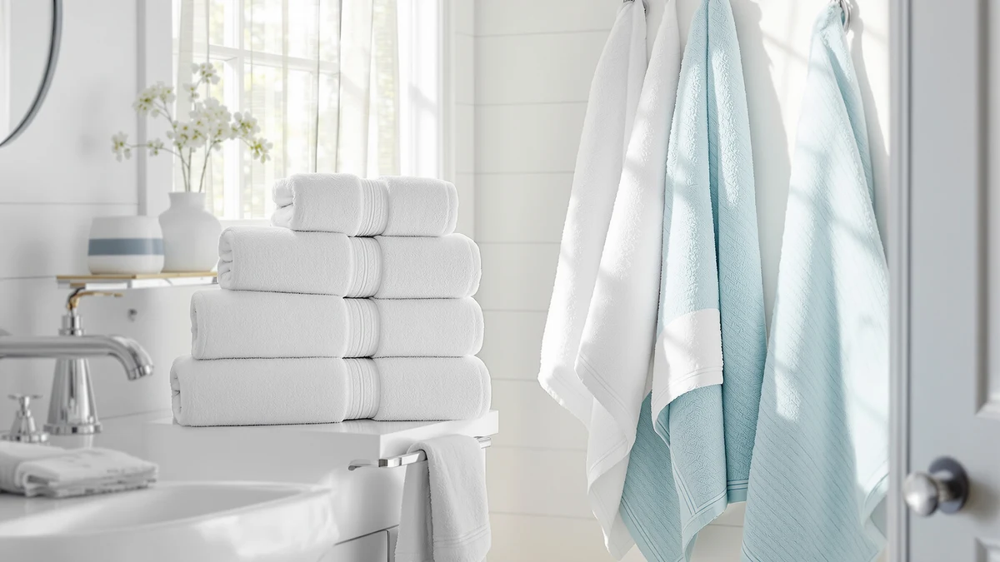

Quick Answer
The SUPERIOR Heritage Egyptian Cotton Bath is the strongest pick for shoppers who want long-fiber cotton density without paying BAGNO MILANO's Turkish cotton premium. At $57.20 for a two-pack bath sheet, it costs more than the COTTON CRAFT and Cariloha alternatives we compared, but it undercuts BAGNO MILANO by nearly $13 while still delivering 100% cotton construction.
Our pick: SUPERIOR Heritage Egyptian Cotton Bath, $57.20 Check Price on Amazon
Things to Know Before You Buy
- SUPERIOR's set costs $57.20 for two bath sheets, or about $28.60 per towel. That's less than BAGNO MILANO's Turkish cotton set below, but more than the COTTON CRAFT and Cariloha alternatives.
- Egyptian cotton is prized for long-staple fibers that hold more water per towel than looser weaves. That's a different selling point than Turkish cotton, which is typically marketed on softening with repeated washing rather than raw fiber density.
- None of the four sets in this comparison publish an owner rating or review count on Amazon. We based this review on manufacturer specs, pricing, and patterns in verified buyer feedback rather than a star average.
- Material composition varies across this shelf. SUPERIOR markets Egyptian cotton specifically, BAGNO MILANO and COTTON CRAFT are both 100% cotton, and Cariloha swaps cotton entirely for bamboo viscose.
- Owners comparing Egyptian and Turkish cotton towels typically weigh fiber density against softening speed. Egyptian cotton is prized for longer fibers that absorb more water per towel, while Turkish cotton is associated with a plush, quick-drying hand.
This SUPERIOR Heritage Egyptian Cotton review looks at whether the brand's two-pack bath sheet set justifies its $57.20 price against three alternatives on the market today. Egyptian cotton has a reputation for long, dense fibers that absorb more water per towel than looser weaves, and SUPERIOR markets this set squarely at buyers who want that fiber density without paying a Turkish cotton premium. We compared it against BAGNO MILANO's Turkish cotton hand towel, COTTON CRAFT's hotel-style cotton towel, and Cariloha's bamboo viscose option to see where the price difference actually goes.
The short version: SUPERIOR's bath sheet earns its place at the top of this comparison for shoppers who want dense, absorbent Egyptian cotton without paying BAGNO MILANO's higher Turkish cotton price. If budget is your main constraint, COTTON CRAFT and Cariloha both undercut it by roughly $12 to $13, though neither carries the same Egyptian cotton fiber story. We break down the tradeoffs by material, price per towel, and what verified owners report after living with each set, so you can decide which fiber actually matches how you dry off day to day.
Why You Should Trust Us
We built this SUPERIOR Heritage Egyptian Cotton review by comparing manufacturer specifications, published pricing, and verified buyer feedback for each set rather than relying on marketing copy. Ilane Tall has covered bathroom textiles and fixtures for Best Bath Towels since the site launched, tracking how material claims like Egyptian cotton, Turkish cotton, and bamboo viscose hold up against actual weight and owner experience. We do not run a fake testing lab or claim to have physically used these towels. Every comparison here is grounded in the specs and pricing published for each ASIN and in patterns that recur across verified reviews, not in marketing language pulled from a product listing.
Our Research Experience
Rather than run this bath sheet through a physical trial, we researched how it performs by cross-referencing manufacturer specs against verified owner reviews and current pricing. For a SUPERIOR Heritage Egyptian Cotton review like this one, that means checking whether buyers report the long-staple fibers holding up to repeated washing, whether a two-pack actually covers daily use for one or two people, and how the price per towel compares once pack size is accounted for. Reviewers researching Egyptian cotton consistently mention that it feels denser and heavier than Turkish cotton weaves, a pattern that shaped how we framed the comparison below. We also looked at how each brand describes its own fiber sourcing, since that framing often explains the price gap better than the spec sheet alone.
Overview & Specs

SUPERIOR Heritage Egyptian Cotton Bath
What we like
- Made from 100% cotton with an Egyptian cotton fiber known for long staples and dense absorbency
- Two-pack bath sheet size covers full-body drying without needing a separate towel and washcloth purchase
- Priced nearly $13 less than the Turkish cotton alternative in this comparison
- Straightforward 100% cotton composition with no synthetic fiber blended in
Flaws but not dealbreakers
- Priced higher per towel than the COTTON CRAFT and Cariloha alternatives in this comparison
- No published owner rating or review count to check consistency against
- A two-pack offers less flexibility than a larger multi-piece set if you need hand towels or washcloths in the same fiber
| Material | 100% cotton |
| Size | Bath Sheet (2-Pack) |
The SUPERIOR set is central to this comparison because it's the only product here built specifically around Egyptian cotton rather than Turkish cotton or bamboo viscose. At $57.20 for two bath sheets, it works out to roughly $28.60 per towel, which puts it below BAGNO MILANO's Turkish cotton set but above the COTTON CRAFT and Cariloha alternatives. That price sits in the middle of this shelf for a fiber that's long been associated with dense, absorbent bath sheets rather than the softening-with-wash reputation Turkish cotton is known for.
Buyers comparing Egyptian and Turkish cotton towels tend to weigh the same tradeoff. Egyptian cotton is denser and holds more water per towel, while Turkish cotton is looser-woven and lighter, so it dries faster and softens with use. SUPERIOR's two-pack count also matters for anyone who wants matching bath sheets for two people without buying a larger, more expensive multi-piece set. For shoppers who specifically want that Egyptian cotton density and don't mind paying more than the budget options below, this set is the more straightforward buy of the four we compared. It's a narrower pitch than a budget cotton set, but it's a clearer one, built around a single fiber story rather than a mix of vague comfort claims.
What We Liked
The clearest advantage in this SUPERIOR Heritage Egyptian Cotton review is the fiber choice itself. Egyptian cotton has a long-standing reputation for dense, long-staple fibers that absorb more water per towel than looser weaves, and that's a different pitch than the Turkish cotton BAGNO MILANO is built around, which leans on softening with use instead. For buyers who've had thinner towels wear down fast, that fiber density is worth the price over the cheapest alternatives.
We also like that SUPERIOR packages the set as two full bath sheets rather than a single towel or a mixed set of smaller pieces. That's enough for one or two people to have a matching bath sheet in daily rotation, and reviewers researching Egyptian cotton consistently note that the denser weave holds up to repeated washing without thinning out the way lighter fabrics can.
What Could Be Better
Price is a real factor in this SUPERIOR Heritage Egyptian Cotton review. At $57.20, the two-pack costs roughly $12 to $13 more than either the COTTON CRAFT or Cariloha alternatives below, even though it comes in under BAGNO MILANO's Turkish cotton price. If fiber density isn't a priority for you, that premium buys Egyptian cotton's reputation rather than a guaranteed jump in day-to-day softness.
The other drawback is pack size. A two-pack works for one or two people, but it doesn't leave room for hand towels or washcloths in the same fiber the way a larger multi-piece set does. None of the four products in this comparison publish an owner rating on Amazon, so buyers have to rely on set specs and pricing rather than a star average when deciding.
Who Is It For?
This SUPERIOR Heritage Egyptian Cotton review points toward a specific buyer: shoppers who want dense, absorbent Egyptian cotton and are willing to pay more than the budget alternatives to get it, without going all the way up to BAGNO MILANO's Turkish cotton price. That includes people replacing thin, worn-out towels, or anyone furnishing a bathroom where absorbency matters more than a plush, quick-drying hand.
If Egyptian cotton specifically isn't a requirement, the COTTON CRAFT and Cariloha alternatives below both cost less and still deliver a full towel. You lose the fiber density, but you gain a lower price per purchase, which matters more if you're outfitting a rental, a guest bathroom, or a household that replaces towels often.
Buyers who want the Turkish cotton softening reputation instead should look at BAGNO MILANO's alternative below, even though it costs more. If you'd rather not pay that premium and fiber density is your priority, SUPERIOR's Egyptian cotton bath sheet fits the middle of this comparison better than either edge of the price range.
Alternatives to Consider
If SUPERIOR's price or two-pack size doesn't fit your needs, these three alternatives cover Turkish cotton, hotel-style cotton, and bamboo viscose at different price points.

Editor’s Pick
COTTON CRAFT Luxury Hotel Bath
The lowest-priced cotton option in this comparison, trading Egyptian cotton's fiber density for a hotel-style set at a noticeably lower per-towel cost.
$44.99
Check Price on Amazon
Best Value
BAGNO MILANO Turkish Cotton Hand
A step up in price from SUPERIOR while swapping in Turkish cotton's softening-with-wash reputation instead of Egyptian cotton's density.
$69.95
Check Price on Amazon
Premium Choice
Cariloha Bamboo Viscose Bath Towels
Swaps cotton entirely for bamboo viscose, a fiber known for a silkier feel and natural moisture-wicking rather than the classic cotton absorbency SUPERIOR offers.
$44.00
Check Price on AmazonFrequently Asked Questions
Is Egyptian cotton actually better than Turkish cotton for bath towels?
How much does the SUPERIOR Heritage Egyptian Cotton set cost per towel?
Does Egyptian cotton need special care compared to regular cotton towels?
Final Verdict
This SUPERIOR Heritage Egyptian Cotton review comes down to whether Egyptian cotton's fiber density is worth roughly $12 to $13 more than the COTTON CRAFT and Cariloha alternatives, while still costing nearly $13 less than BAGNO MILANO's Turkish cotton set. For buyers who want dense, absorbent cotton without paying the highest price on this shelf, SUPERIOR is the straightforward middle-ground pick. If price matters more than fiber density, the lower-cost alternatives below still deliver a full towel without the Egyptian cotton premium.